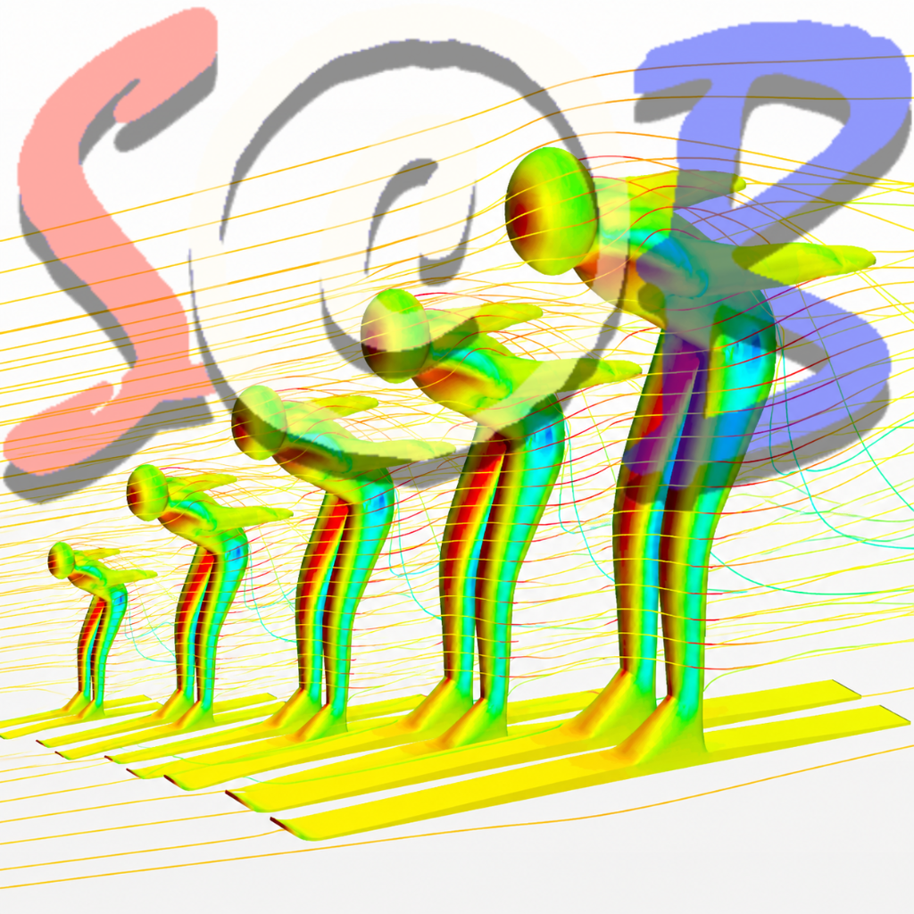

High-quality recording
Capture smooth 60 fps video for fast sporting movements.

iPhone · iOSHigh-quality 60 fps video recording designed for sports, coaching, biomechanics, and detailed motion analysis.
sjRecorder creates smooth, high-quality video for athlete analysis and professional sports workflows.
The user chooses where recordings are saved through the iOS Files interface.
Capture smooth 60 fps video for fast sporting movements.
Created for coaching, biomechanics, research, and athlete development.
Choose where recordings are saved using the iOS Files interface.
Recordings remain under the user’s control.
Record, save, and continue into cropping or analysis.
Use the app without registration or tracking.
Questions, feedback, or support requests can be sent to steinbra@me.com.
sjRecorder uses camera access only for recording video requested by the user.